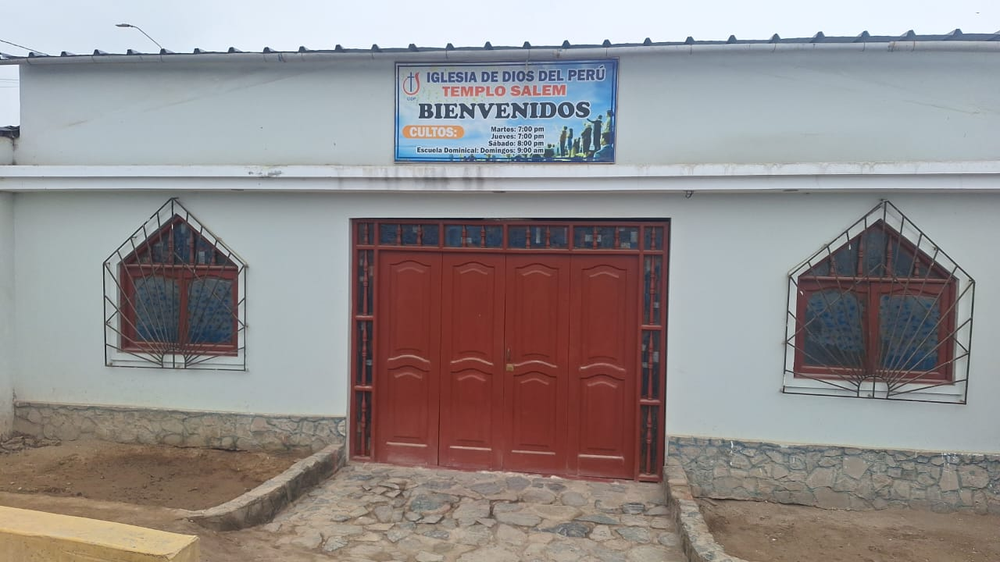

"Embajadores de Cristo"
Pastor: Ezequiel Tarazona Luna
Ubicación: calle sn.Las Casuarinas - Retes - Huaral
"Fe y Vida"
Pastor: Esteban Felipe Toribio Ledesma
Ubicación: Pasaje El Porvenir 245 - Huaral


"Salem"
Pastor: Máximo Ortega S.
Ubicación: aa.hh. la candelaria MZ.Ñ. lote 5 calle santa luisa